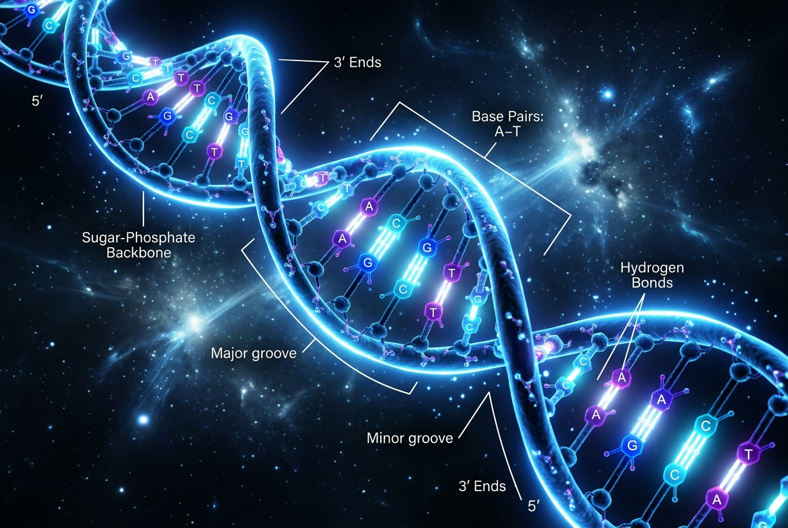
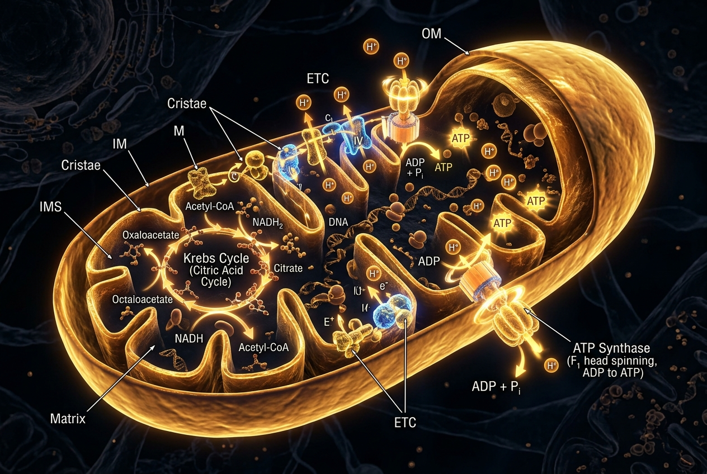
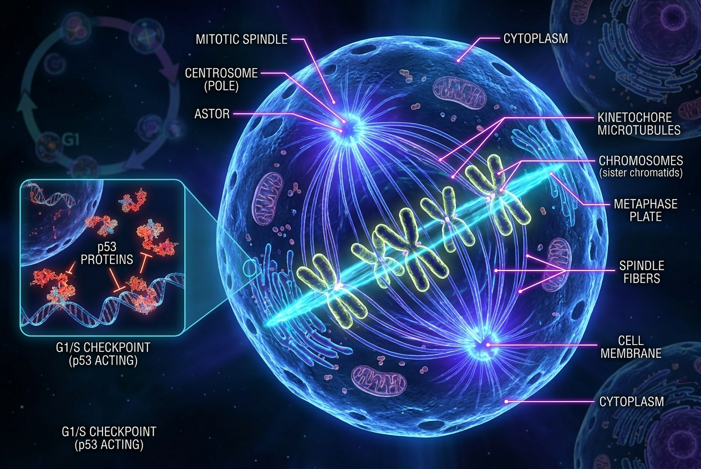

เลือกประสบการณ์การเรียนรู้ที่คุณต้องการ
ทั้ง 3 โปรเจกต์ถูกพัฒนาแยกจากกันอย่างสมบูรณ์แบบ ให้คุณเข้าถึงความรู้ชีววิทยาได้ทุกมิติ
เกาะลอยฟ้าเซลล์ชีววิทยา 3 มิติ
เดินสำรวจ 6 ศาลเจ้าแห่งชีวโมเลกุล วิ่งเล่นกับสัตว์ป่าสไตล์ Zelda ผจญภัยตามหา 7 ขุมทรัพย์ลับ และไขปริศนาชีววิทยาแบบอินเทอร์แอคทีฟ 360 องศา


สถาบันวิจัยชีววิทยา 2D Lab
ห้องปฏิบัติการเซลล์จำลอง ผสมยาต้านแอนติเจน ทำการทดลองเคมีโมเลกุล และเอาชีวิตรอดจากซอมบี้เซลล์กลายพันธุ์

ปัญญาประดิษฐ์ผู้ช่วยสอน
สนทนาและซักถามข้อสงสัยทางชีววิทยาเซลล์ได้ตลอด 24 ชั่วโมง วิเคราะห์โจทย์ข้อสอบและอธิบายเชิงลึกแบบเข้าใจง่าย

ขุมพลังเซลล์ & ATP Synthase
โรงไฟฟ้าของเซลล์ สำรวจกลไก Electron Transport Chain การสร้าง Proton Gradient และการสังเคราะห์พลังงาน ATP 3D

7 ขุมทรัพย์ & บททดสอบ
ท้าทายตนเองด้วยข้อสอบชีววิทยาโมเลกุล 15 ข้อ พร้อมระบบคะแนนแบบ Real-time และการปลดล็อกความสำเร็จประจำบท